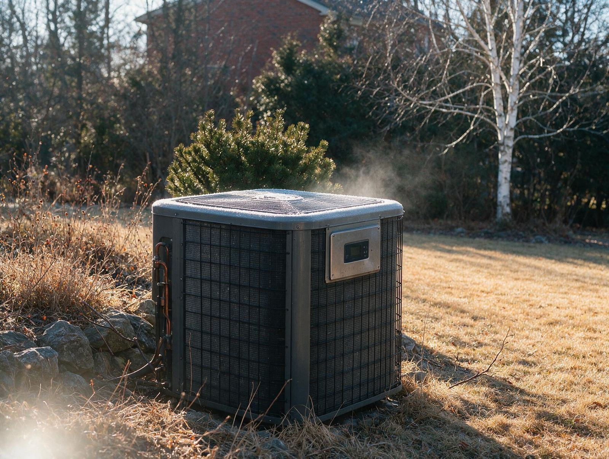

By the Editorial Team | Published: August 2026 | Last Updated: August 2026
What Actually Happens Inside a Heat Pump When It Runs in Hot-Humid Climate Winters
Heat pumps get discussed as if they are a mystery box, but the mechanism they use is a well-understood refrigerant cycle that has been reliable for decades. Understanding what a heat pump actually does in winter, and how it behaves at the range of outdoor temperatures a hot-humid climate delivers, clarifies why the technology has become the dominant choice for these regions and what the sizing and equipment-selection decisions rest on.
This guide walks through the physics of heat pump heating, the specific behavior in ASHRAE climate zones 2 and 3, the role of variable-speed compressors, and what happens at the cold edge of the operating range. It is written for readers who want a substantive picture of the equipment rather than just marketing claims.
The Refrigerant Cycle in Heating Mode
A heat pump uses the same refrigerant cycle as an air conditioner but runs it in reverse for heating. In cooling mode, the indoor coil is cold, the outdoor coil is hot, and refrigerant moves heat from inside to outside. A reversing valve switches the refrigerant direction so the indoor coil becomes hot and the outdoor coil becomes cold. The compressor compresses low-pressure refrigerant vapor into a high-pressure high-temperature vapor, which releases heat into the indoor air through the indoor coil, then expands back to low pressure through a metering device and absorbs heat from the outdoor air at the outdoor coil.
The efficiency of this cycle depends on the temperature difference the refrigerant has to bridge. When outdoor air is close to indoor temperature, the cycle uses very little compressor work per unit of heat delivered. When outdoor air is much colder than indoor, the compressor works harder for the same heat output, which is why the coefficient of performance (COP) drops as outdoor temperatures fall.
What Winter Temperatures Actually Look Like in Zones 2 and 3
ASHRAE climate zone 2 (Gulf Coast, southernmost Florida, southernmost Texas) has 99 percent design temperatures typically in the 30 to 40 degree Fahrenheit range. Zone 3 (most of the Southeast and inland South, southern California) has 99 percent design temperatures typically in the 20 to 30 degree range. Both zones spend the majority of their annual heating hours at outdoor temperatures above 40 F.

What that means for a heat pump: nearly all of the annual heating runtime happens in the temperature range where the equipment operates at its highest efficiency. A modest number of hours per year the outdoor temperature drops below the crossover point where auxiliary electric resistance may need to supplement, but those hours are a small fraction of total runtime. This is why heat pumps in these climates deliver very low seasonal heating costs even at U.S. average electricity rates.
How Variable-Speed Compressors Change the Picture
Single-stage heat pumps run at one output level: full capacity when the thermostat calls and off when it does not. Variable-speed heat pumps use inverter-driven compressors that can modulate output from roughly 25 percent to 100 percent of rated capacity continuously. On a mild winter day when the house needs only a fraction of full heating capacity, the variable-speed unit runs at low output for long periods, which delivers three practical benefits:
- Higher seasonal efficiency because the compressor spends most of its runtime at partial load where mechanical efficiency peaks.
- Better humidity control in shoulder seasons because long low-speed run times remove more moisture per hour of runtime.
- Reduced comfort swings because the equipment matches output to load instead of cycling on and off.
The Behavior at Cold Extremes
Every standard heat pump has a balance point, defined as the outdoor temperature at which the equipment's heating capacity equals the house's heating load. Above the balance point, the heat pump alone meets the load. Below the balance point, the equipment cannot deliver enough heat to keep up, and auxiliary heat (usually electric resistance strips at the air handler, sometimes a gas backup furnace in dual-fuel systems) supplements to bridge the gap.
In zones 2 and 3, the balance point on a properly sized system typically falls in the 25 to 35 F range, and outdoor temperatures spend very few hours per year below that point. Cold-climate heat pumps push the balance point down to zero F or below, which is more capability than these zones need. Standard heat pumps are the right fit for most homes in hot-humid climates on both first-cost and ongoing-performance grounds.
Defrost Cycles and What They Mean for Comfort
When outdoor temperatures are between roughly 32 and 45 F and outdoor humidity is elevated, frost accumulates on the outdoor coil because moisture in the air condenses and freezes on the cold coil fins. The heat pump periodically reverses the cycle for a few minutes (5 to 10 typically) to melt the frost off the outdoor coil. During defrost, the indoor air is briefly cool rather than warm because the cycle is running in reverse.
Modern heat pumps time defrost intelligently based on actual coil temperature and pressure conditions rather than a fixed timer, so defrost cycles run only when needed. Homeowners typically notice defrost as a brief pause in warm airflow followed by resumption of normal heating. It is a normal operating characteristic and not a fault condition.

Heat Pump Behavior at a Glance Across the Winter Range
| Outdoor temperature | Typical COP (single-stage) | Typical COP (variable-speed) | Auxiliary heat likely? |
|---|---|---|---|
| 60 F and above | Not applicable (no heating call) | Not applicable | No |
| 45 to 55 F | 3.5 to 4.0 | 4.0 to 4.5 | No |
| 35 to 45 F | 2.8 to 3.3 | 3.3 to 3.8 | No (occasional defrost) |
| 25 to 35 F | 2.2 to 2.6 | 2.5 to 3.0 | Rarely |
| 15 to 25 F | 1.7 to 2.1 | 2.0 to 2.5 | Sometimes on undersized systems |
| Below 15 F | 1.3 to 1.6 | 1.8 to 2.2 (cold-climate: 2.5+) | Standard systems yes; cold-climate no |
The Duct and Airflow Consequences
Heat pumps typically deliver supply air at 90 to 105 F, which is warm enough for comfort but cooler than the 130 to 140 F supply air a gas furnace delivers. The lower supply-air temperature affects duct sizing and register selection. Ducts sized for a gas furnace deliver acceptable heat pump airflow only if the total airflow is adequate for the cooling load, which is the higher of the two on most homes in these climates.
Registers matter too. Ceiling registers that throw warm air across the room work well with hot furnace air but can leave cold spots at floor level with cooler heat pump air. Floor or low-wall registers work better with heat pump supply temperatures. On new construction the designer picks register locations based on the equipment type; on retrofits the existing register geometry sometimes needs modification for optimal comfort with a heat pump.
Frequently Asked Questions
Does a heat pump work in freezing temperatures?
Yes. Standard heat pumps continue producing heat at outdoor temperatures well below freezing, though their capacity and efficiency drop as temperatures fall. In hot-humid climates the number of hours per year below freezing is small, and modern equipment handles this range comfortably. Cold-climate heat pumps extend the efficient operating range to zero F and below for regions that need it.
Why does the air from a heat pump feel cooler than furnace air?
Because it is. Heat pump supply air is typically 90 to 105 F, while furnace supply air is 130 to 140 F. Both temperatures are above body temperature (98.6 F) and both heat the room, but the higher-temperature furnace air feels warmer immediately at the register. Homeowners transitioning from a furnace to a heat pump sometimes notice the difference for the first few weeks, then acclimate as the room temperature stabilizes at the thermostat setpoint.
Do heat pumps need supplemental heat in hot-humid climates?
Rarely. Standard heat pumps in zones 2 and 3 handle nearly all of the annual heating hours on their own. Auxiliary electric resistance strips are still installed at the air handler as an emergency supplement for the rare very cold hour and for the brief defrost cycles. The strips run infrequently in practice, which is why the energy consumption picture stays favorable.
How does variable-speed operation change the comfort experience day to day?
The equipment runs at low speed for long periods matching output to load rather than cycling on and off at full capacity. The practical result is smaller temperature swings between thermostat cycles, quieter operation, better humidity control in shoulder seasons, and no rush of cold air followed by a rush of hot air. Homeowners who move from single-stage to variable-speed heat pumps typically report a noticeable comfort improvement.
What is the difference between a heat pump and a mini-split?
A mini-split (also called a ductless heat pump) is a heat pump that delivers conditioned air directly into a room through a wall or ceiling head instead of through central ductwork. The mechanical cycle is identical. Mini-splits work well as retrofit heating or cooling for rooms that ducted systems do not reach efficiently. Central heat pumps with ductwork are the more common choice on new construction where the whole-house distribution system is designed from the start.
How much does the heat pump's outdoor unit affect the yard or landscaping?
Modern outdoor units are compact (typically 30 by 30 inches on a residential system) and sit on a small concrete pad or plastic composite pad next to the house. They need clear airflow around the coil (typically 24 inches of clearance) and unobstructed exhaust above the fan. Landscape planning around the outdoor unit is straightforward and does not restrict typical residential yard designs.
Do heat pumps make more noise than a gas furnace and separate AC?
The outdoor unit produces sound similar to a comparable central AC condenser (typically 55 to 70 decibels at 3 feet, depending on model and speed). Variable-speed units are notably quieter at partial load. The indoor air handler produces less sound than a gas furnace with an induced-draft fan because there is no combustion equipment inside. Total system sound is similar to or lower than a furnace-plus-AC pair.
What kind of routine maintenance does a heat pump need?
Annual maintenance includes filter replacement (every 1 to 3 months per filter type), coil cleaning at both indoor and outdoor units, refrigerant charge verification, and airflow verification. The maintenance list is essentially the same as for a central AC. Because the heat pump runs year-round rather than only during cooling season, wear accumulates faster on some components, which is one reason heat pump service life is slightly shorter than a cooling-only AC.
